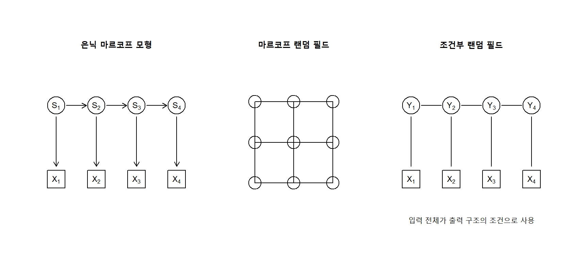
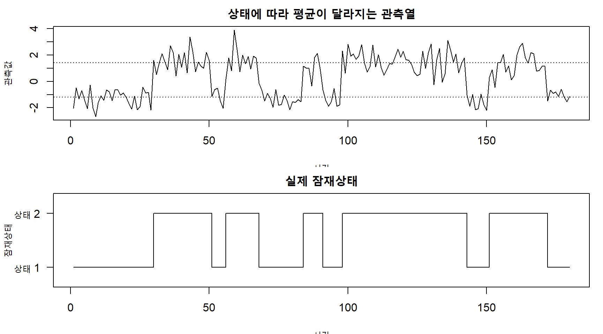
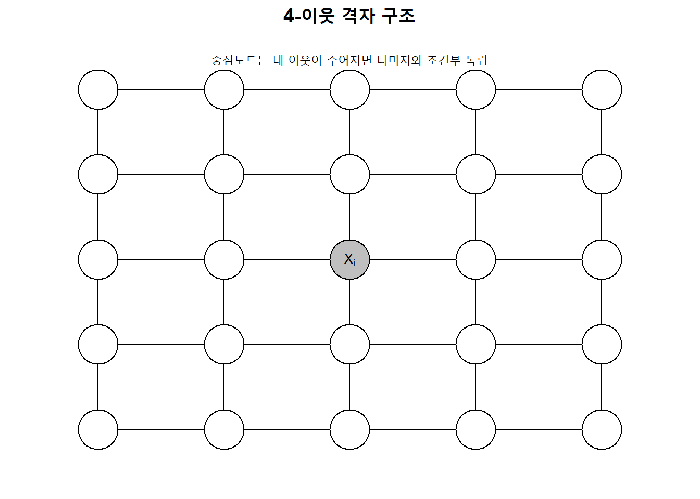
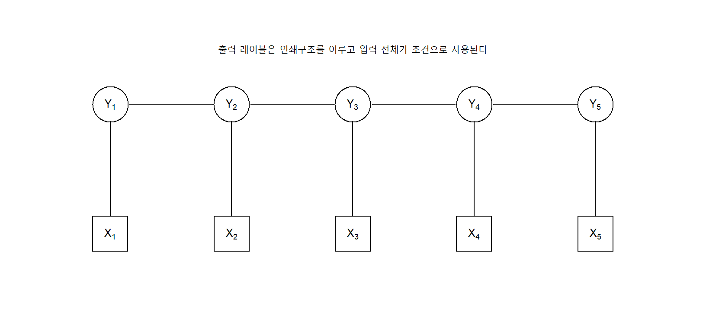
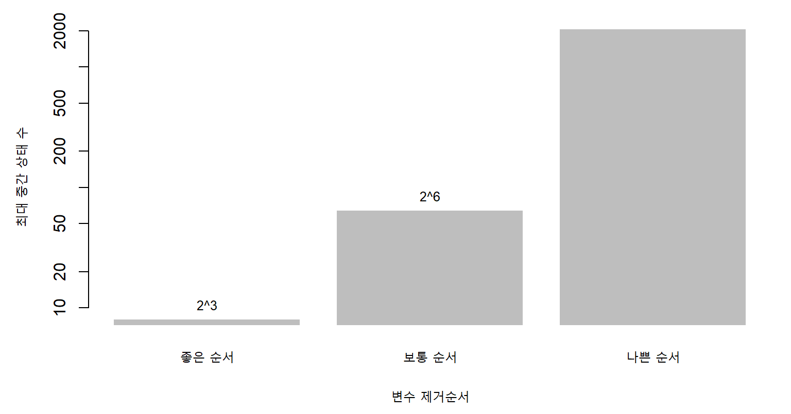
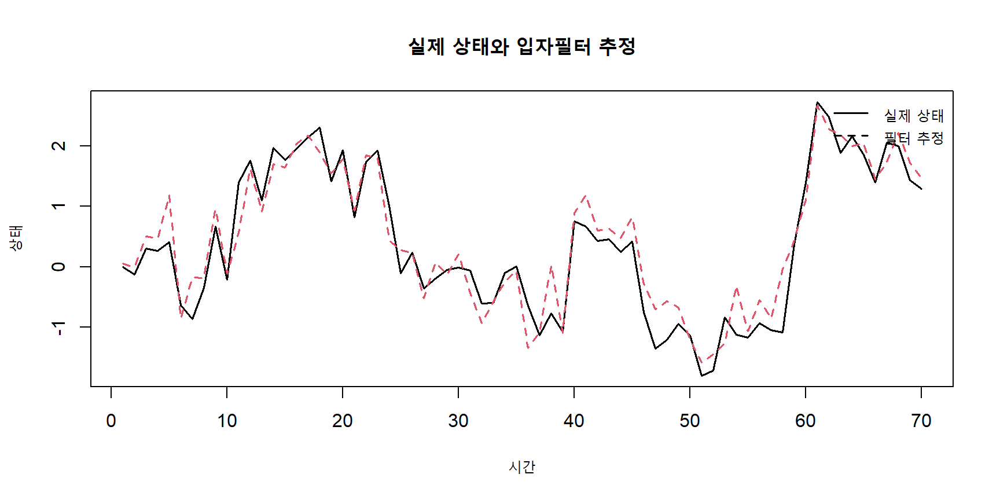
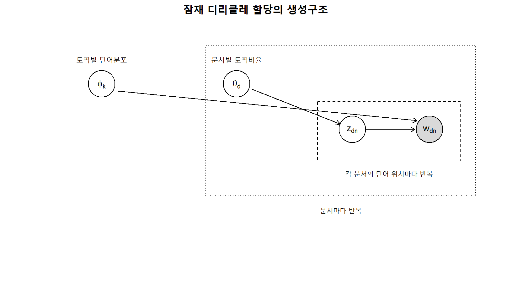
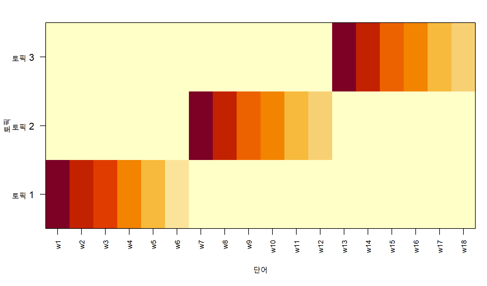

14 확률 그래피컬 모형
확률모형은 관측된 자료의 불확실성을 확률분포로 표현한다. 그러나 변수의 수가 증가하면 결합확률분포를 직접 명시하고 계산하는 일은 빠르게 어려워진다. 예를 들어 \(p\)개의 이진변수로 이루어진 결합분포는 제약을 고려하더라도 \(2^p-1\)개의 자유모수를 필요로 한다. 확률 그래피컬 모형(probabilistic graphical model)은 변수 사이의 조건부 독립성(conditional independence)과 확률분포의 분해구조를 그래프로 표현하여, 복잡한 고차원 확률모형을 이해하고 계산할 수 있게 한다.
확률 그래피컬 모형은 크게 방향성 그래프와 비방향성 그래프로 구분된다. 방향성 비순환 그래프를 이용하는 베이지안 네트워크는 Chapter 7에서 다루었다. 이 장에서는 시간적 잠재상태를 표현하는 은닉 마르코프 모형, 공간적·관계적 상호작용을 표현하는 마르코프 랜덤 필드, 입력이 주어졌을 때 구조화된 출력을 직접 모형화하는 조건부 랜덤 필드를 중심으로 설명한다. 이어 정확추론과 근사추론의 공통 원리를 정리하고, 잠재변수 그래피컬 모형의 대표적 응용인 토픽 모형을 다룬다.
확률 그래피컬 모형의 핵심은 다음 세 질문으로 요약할 수 있다.
- 표현: 어떤 그래프와 확률분해가 변수 사이의 구조를 적절하게 나타내는가?
- 추론: 관측된 변수의 값이 주어졌을 때 미관측 변수의 분포를 어떻게 계산하는가?
- 학습: 자료로부터 모수와 그래프 구조를 어떻게 추정하는가?
그래프를
\[ G=(V,E) \tag{14.1}\]
라고 하자. \(V\)는 확률변수에 대응하는 노드 집합이고, \(E\)는 변수 사이의 직접적인 의존관계를 표현하는 간선 집합이다. 그래프는 확률분포 자체가 아니라 확률분포의 분해와 독립구조를 표현한다. 따라서 같은 그래프 구조라도 서로 다른 모수와 잠재함수(potential function)를 사용하면 서로 다른 확률분포가 된다.
그림 14.1에서 은닉 마르코프 모형은 시간에 따라 변화하는 잠재상태와 관측값을 방향성 그래프로 표현한다. 마르코프 랜덤 필드는 비방향성 간선을 이용하여 공간적 또는 관계적 상호작용을 나타낸다. 조건부 랜덤 필드는 입력 \(\boldsymbol X\)가 주어졌을 때 구조화된 출력 \(\boldsymbol Y\)의 조건부분포를 직접 모형화한다.
확률 그래피컬 모형의 공통 원리
14.0.1 확률분포의 인수분해
그래피컬 모형은 복잡한 결합확률분포를 더 작은 국소함수의 곱으로 분해한다. 방향성 그래프에서는 각 노드가 부모노드에 조건부인 분포로 분해된다.
\[ p(x_1,\ldots,x_p) = \prod_{j=1}^{p} p(x_j\mid \operatorname{pa}(x_j)). \tag{14.2}\]
여기서 \(\operatorname{pa}(x_j)\)는 \(x_j\)의 부모노드 집합이다. 비방향성 그래프에서는 결합분포를 클리크 또는 인수에 대응하는 잠재함수의 곱으로 표현한다.
\[ p(\boldsymbol x) = \frac{1}{Z} \prod_{c\in\mathcal C} \psi_c(\boldsymbol x_c). \tag{14.3}\]
\(\mathcal C\)는 클리크 집합, \(\psi_c(\boldsymbol x_c)>0\)는 클리크 잠재함수, \(Z\)는 확률의 합 또는 적분이 1이 되게 하는 정규화상수이다.
\[ Z = \sum_{\boldsymbol x} \prod_{c\in\mathcal C} \psi_c(\boldsymbol x_c) \tag{14.4}\]
는 이산형 변수의 분배함수(partition function)이다. 연속형 변수에서는 합을 적분으로 바꾼다. 방향성 모형에서는 국소 조건부분포가 각각 정규화되어 있으므로 결합분포가 자동으로 정규화된다. 반면 비방향성 모형에서는 전역 정규화상수 \(Z\)를 계산해야 하며, 이것이 학습과 추론을 어렵게 만드는 주요 원인이다.
14.0.2 조건부 독립성과 마르코프 성질
확률변수 \(A\), \(B\), \(C\)에 대해
\[ A\perp B\mid C \]
는 \(C\)가 주어졌을 때 \(A\)와 \(B\)가 조건부 독립임을 뜻한다. 즉,
\[ p(a,b\mid c) = p(a\mid c)p(b\mid c) \tag{14.5}\]
이다. 그래프의 분리구조는 이러한 조건부 독립관계를 시각적으로 표현한다.
비방향성 그래프에서 노드 \(X_i\)의 이웃집합을 \(\mathcal N(i)\)라고 하자. 국소 마르코프 성질은 다음과 같다.
\[ X_i \perp \boldsymbol X_{V\setminus(\{i\}\cup\mathcal N(i))} \mid \boldsymbol X_{\mathcal N(i)}. \tag{14.6}\]
즉, 한 노드는 자신의 이웃이 주어지면 그래프의 나머지 노드와 조건부 독립이다. 이 성질은 고차원 결합분포를 국소 조건부분포로 계산할 수 있게 한다.
14.0.3 인수 그래프
인수 그래프(factor graph)는 변수노드와 인수노드를 분리하여 확률분해를 이분 그래프로 표현한다. 결합함수
\[ f(\boldsymbol x) = \prod_{a=1}^{m}f_a(\boldsymbol x_a) \tag{14.7}\]
에서 각 변수 \(x_i\)는 변수노드로, 각 국소함수 \(f_a\)는 인수노드로 나타낸다. 인수 그래프는 방향성 모형과 비방향성 모형을 동일한 메시지 전달 관점에서 이해하게 한다. 합-곱 알고리즘과 최대-곱 알고리즘(max-product algorithm)은 인수 그래프에서 정의되는 대표적 추론 알고리즘이다.
노트그래프와 확률모형을 구분해야 하는 이유
그래프는 어떤 변수가 직접 연결되어 있는지를 보여주지만, 간선의 존재만으로 효과의 크기나 방향을 알 수는 없다. 그래프 구조와 함께 조건부분포, 잠재함수 또는 모수값이 주어져야 완전한 확률모형이 정의된다.
14.0.4 생성모형과 판별모형
그래피컬 모형은 생성적 접근과 판별적 접근으로 구분할 수 있다. 생성모형은 입력과 출력의 결합분포
\[ p(\boldsymbol x,\boldsymbol y) \]
를 모형화한다. 은닉 마르코프 모형은 관측열과 상태열의 결합분포를 정의하는 생성모형이다. 판별모형은 입력이 주어졌을 때 출력의 조건부분포
\[ p(\boldsymbol y\mid\boldsymbol x) \]
를 직접 모형화한다. 조건부 랜덤 필드는 구조화된 출력에 대한 대표적인 판별 그래피컬 모형이다.
생성모형은 자료가 어떻게 생성되는지를 명시하므로 결측값 처리, 모의자료 생성과 잠재구조 해석에 유리하다. 판별모형은 입력분포 \(p(\boldsymbol x)\)를 모형화하지 않아도 되므로 복잡한 입력 특성을 자유롭게 사용할 수 있고, 충분한 레이블 자료가 있을 때 예측성능이 우수한 경우가 많다.
14.1 은닉 마르코프 모델
14.1.1 상태공간과 마르코프 가정
시계열 자료에서는 관측값이 시간에 따라 상관되어 있고, 직접 관측할 수 없는 잠재상태가 관측과정을 지배하는 경우가 많다. 질병의 단계, 시장의 국면, 음성의 음소, 기계의 작동상태가 대표적인 예이다. 은닉 마르코프 모형(hidden Markov model, HMM)은 잠재상태열
\[ S_1,S_2,\ldots,S_T \]
과 관측열
\[ X_1,X_2,\ldots,X_T \]
을 함께 모형화한다. 상태 \(S_t\)는 직접 관측되지 않으며, \(X_t\)를 통해 간접적으로 추론한다.
일차 마르코프 가정은 현재 상태가 주어지면 다음 상태가 더 먼 과거와 독립이라고 가정한다.
\[ p(S_t\mid S_{1:t-1}) = p(S_t\mid S_{t-1}). \tag{14.8}\]
관측 독립성 가정은 현재 상태가 주어지면 현재 관측값이 다른 상태와 관측값에 조건부 독립이라고 가정한다.
\[ p(X_t\mid S_{1:T},X_{1:t-1}) = p(X_t\mid S_t). \tag{14.9}\]
이 두 가정에 따라 상태와 관측의 결합분포는 다음과 같이 분해된다.
\[ p(s_{1:T},x_{1:T}) = p(s_1) \prod_{t=2}^{T}p(s_t\mid s_{t-1}) \prod_{t=1}^{T}p(x_t\mid s_t). \tag{14.10}\]
상태가 \(K\)개라면 초기상태확률을
\[ \pi_k=P(S_1=k), \qquad \sum_{k=1}^{K}\pi_k=1, \]
전이확률을
\[ a_{jk}=P(S_t=k\mid S_{t-1}=j), \qquad \sum_{k=1}^{K}a_{jk}=1, \tag{14.11}\]
방출분포를
\[ b_k(x)=p(X_t=x\mid S_t=k) \tag{14.12}\]
라고 한다. 정상 HMM에서는 \(a_{jk}\)와 \(b_k\)가 시간에 따라 변하지 않는다고 가정한다.
14.1.2 HMM의 세 가지 기본 문제
HMM에서는 다음 세 계산문제가 반복적으로 등장한다.
- 가능도 계산: 모수가 주어졌을 때 관측열 \(x_{1:T}\)의 확률 \(p(x_{1:T})\)을 계산한다.
- 상태 복호화: 관측열이 주어졌을 때 가장 가능성 높은 상태열 또는 각 시점의 상태확률을 구한다.
- 모수 학습: 관측열만으로 초기확률, 전이확률과 방출분포의 모수를 추정한다.
모든 가능한 상태열은 \(K^T\)개이므로 직접 합산하면 계산량이 지수적으로 증가한다. HMM의 연쇄구조는 동적계획법을 이용하여 이 문제를 다항시간에 해결하게 한다.
14.1.3 전향 알고리즘
전향확률을
\[ \alpha_t(k) = p(x_{1:t},S_t=k) \tag{14.13}\]
로 정의한다. 초기화는
\[ \alpha_1(k) = \pi_k b_k(x_1) \tag{14.14}\]
이고, 재귀식은
\[ \alpha_t(k) = b_k(x_t) \sum_{j=1}^{K} \alpha_{t-1}(j)a_{jk} \tag{14.15}\]
이다. 마지막으로 관측열의 가능도는
\[ p(x_{1:T}) = \sum_{k=1}^{K}\alpha_T(k) \tag{14.16}\]
로 계산한다. 계산복잡도는 \(O(TK^2)\)이다.
긴 시계열에서는 전향확률이 매우 작아져 수치적 언더플로가 발생할 수 있다. 이를 방지하려면 시점별 척도상수
\[ c_t=\sum_{k=1}^{K}\widetilde\alpha_t(k) \]
를 이용해 정규화하거나 로그 공간에서 log-sum-exp 연산을 사용한다. 척도화된 전향알고리즘에서 로그가능도는
\[ \log p(x_{1:T}) = \sum_{t=1}^{T}\log c_t \tag{14.17}\]
로 계산할 수 있다.
14.1.4 후향 알고리즘과 평활화
후향확률을
\[ \beta_t(j) = p(x_{t+1:T}\mid S_t=j) \tag{14.18}\]
로 정의한다. 마지막 시점에서는
\[ \beta_T(j)=1 \]
이고, 뒤에서 앞으로 다음 재귀식을 적용한다.
\[ \beta_t(j) = \sum_{k=1}^{K} a_{jk}b_k(x_{t+1})\beta_{t+1}(k). \tag{14.19}\]
전향확률과 후향확률을 결합하면 전체 관측열이 주어졌을 때 시점 \(t\)의 상태 사후확률을 구할 수 있다.
\[ \gamma_t(k) = p(S_t=k\mid x_{1:T}) = \frac{\alpha_t(k)\beta_t(k)} {p(x_{1:T})}. \tag{14.20}\]
\(\gamma_t(k)\)는 특정 시점의 상태에 대한 평활화 확률이다. 실시간 예측에서는 미래 관측을 사용할 수 없으므로
\[ p(S_t=k\mid x_{1:t}) \]
인 필터링 확률을 사용한다. 과거자료만으로 미래상태를 예측하려면 전이행렬을 이용해
\[ p(S_{t+h}\mid x_{1:t}) \]
를 계산한다.
14.1.5 비터비 알고리즘
각 시점의 주변 사후확률을 최대화한 상태를 따로 선택하면 전체적으로 불가능하거나 전이확률이 매우 낮은 상태열이 만들어질 수 있다. 비터비 알고리즘(Viterbi algorithm)은 전체 상태열의 사후확률을 최대화한다.
\[ \widehat s_{1:T} = \arg\max_{s_{1:T}} p(s_{1:T}\mid x_{1:T}) = \arg\max_{s_{1:T}} p(s_{1:T},x_{1:T}). \tag{14.21}\]
비터비 점수를
\[ \delta_t(k) = \max_{s_{1:t-1}} p(s_{1:t-1},S_t=k,x_{1:t}) \]
로 정의하면
\[ \delta_t(k) = b_k(x_t) \max_j \{\delta_{t-1}(j)a_{jk}\} \tag{14.22}\]
가 된다. 각 시점에서 최대값을 만든 이전 상태를 저장한 뒤 마지막 시점부터 역추적하여 최적 상태열을 얻는다. 전향알고리즘이 합-곱 연산을 사용하는 반면 비터비 알고리즘은 최대-곱 연산을 사용한다.

그림 14.2은 관측값만 보아서는 상태가 불확실하지만, 시간적 지속성과 상태별 방출분포를 함께 이용하면 잠재상태를 더 안정적으로 복원할 수 있음을 보여준다.
14.1.6 Baum–Welch 알고리즘
상태열을 관측하지 못한 경우 HMM의 모수는 EM 알고리즘으로 추정할 수 있다. 이를 Baum–Welch 알고리즘이라고 한다. E-step에서는 현재 모수로 상태 사후확률 \(\gamma_t(k)\)와 연속된 두 상태의 결합 사후확률
\[ \xi_t(j,k) = p(S_t=j,S_{t+1}=k\mid x_{1:T}) \tag{14.23}\]
을 계산한다.
\[ \xi_t(j,k) = \frac{ \alpha_t(j)a_{jk}b_k(x_{t+1})\beta_{t+1}(k) }{p(x_{1:T})}. \tag{14.24}\]
M-step에서는 기대완전자료 로그가능도를 최대화한다. 초기확률과 전이확률의 갱신식은 다음과 같다.
\[ \pi_k^{\mathrm{new}} = \gamma_1(k), \tag{14.25}\]
\[ a_{jk}^{\mathrm{new}} = \frac{ \sum_{t=1}^{T-1}\xi_t(j,k) }{ \sum_{t=1}^{T-1}\gamma_t(j) }. \tag{14.26}\]
가우시안 방출분포
\[ X_t\mid S_t=k \sim N(\mu_k,\sigma_k^2) \]
를 가정하면
\[ \mu_k^{\mathrm{new}} = \frac{\sum_{t=1}^{T}\gamma_t(k)x_t} {\sum_{t=1}^{T}\gamma_t(k)}, \tag{14.27}\]
\[ (\sigma_k^2)^{\mathrm{new}} = \frac{ \sum_{t=1}^{T}\gamma_t(k)(x_t-\mu_k^{\mathrm{new}})^2 }{ \sum_{t=1}^{T}\gamma_t(k) } \tag{14.28}\]
가 된다. EM은 로그가능도를 감소시키지 않지만 국소 최적해에 수렴할 수 있으므로 여러 초기값을 비교해야 한다.
14.1.7 HMM의 확장과 한계
표준 HMM은 상태 지속시간이 기하분포를 따른다는 암묵적 가정을 갖는다. 상태 \(k\)에 머무를 확률이 \(a_{kk}\)라면 지속시간 \(D\)는
\[ P(D=d) = a_{kk}^{d-1}(1-a_{kk}) \tag{14.29}\]
를 따른다. 실제 지속시간 분포가 이와 크게 다르면 은닉 준마르코프 모형(hidden semi-Markov model)을 사용할 수 있다. 그 밖의 확장은 다음과 같다.
- 입력이나 공변량에 따라 전이확률이 변하는 비동질 HMM
- 여러 개의 상호작용하는 상태열을 갖는 factorial HMM
- 연속 잠재상태를 갖는 상태공간모형과 칼만 필터
- 계층적 상태를 갖는 hierarchical HMM
- 여러 관측열을 공동으로 다루는 다변량 HMM
- 상태 수가 미리 정해지지 않은 베이지안 비모수 HMM
HMM을 해석할 때는 상태번호 자체에 의미가 없다는 점에 주의해야 한다. 상태 1과 상태 2의 번호를 바꾸어도 동일한 가능도를 얻는 레이블 전환 문제가 존재한다. 또한 상태 수를 지나치게 늘리면 작은 변동까지 별도 상태로 분리하여 해석이 불안정해질 수 있다. 상태 수는 정보기준, 예측성능, 상태 지속성, 임상적·과학적 해석 가능성을 함께 고려해 선택한다.
14.2 마르코프 랜덤 필드
14.2.1 비방향성 그래프와 클리크 잠재함수
마르코프 랜덤 필드(Markov random field, MRF)는 비방향성 그래프를 이용하여 변수 사이의 대칭적인 상호작용을 표현한다. 방향성 그래프와 달리 간선에는 원인과 결과의 방향이 없다. 공간자료, 영상의 인접 픽셀, 네트워크의 연결된 개체와 같이 상호의존성이 자연스러운 문제에 적합하다.
그래프 \(G=(V,E)\)에서 완전히 연결된 노드 부분집합을 클리크라고 한다. 양의 확률분포가 그래프의 마르코프 성질을 만족하면 Hammersley–Clifford 정리에 따라 결합분포를 최대클리크 잠재함수의 곱으로 표현할 수 있다.
\[ p(\boldsymbol x) = \frac{1}{Z} \prod_{c\in\mathcal C} \psi_c(\boldsymbol x_c). \tag{14.30}\]
잠재함수는 확률일 필요가 없지만 양수이어야 한다. 흔히
\[ \psi_c(\boldsymbol x_c) = \exp\{-E_c(\boldsymbol x_c)\} \]
로 두어 다음과 같은 Gibbs 분포 또는 에너지 기반 표현을 사용한다.
\[ p(\boldsymbol x) = \frac{1}{Z} \exp\{-E(\boldsymbol x)\}, \qquad E(\boldsymbol x) = \sum_{c\in\mathcal C}E_c(\boldsymbol x_c). \tag{14.31}\]
확률이 높은 구성은 에너지가 낮고, 확률이 낮은 구성은 에너지가 높다. 이 표현은 MRF, 조건부 랜덤 필드와 현대적 에너지 기반 모형을 하나의 언어로 연결한다.
14.2.2 쌍별 마르코프 랜덤 필드
실무에서는 단일노드와 두 노드 사이의 상호작용만 포함하는 쌍별 MRF를 자주 사용한다.
\[ p(\boldsymbol x) = \frac{1}{Z} \prod_{i\in V}\psi_i(x_i) \prod_{(i,j)\in E}\psi_{ij}(x_i,x_j). \tag{14.32}\]
이에 대응하는 에너지는
\[ E(\boldsymbol x) = \sum_{i\in V}E_i(x_i) + \sum_{(i,j)\in E}E_{ij}(x_i,x_j) \tag{14.33}\]
이다. \(E_i\)는 각 노드의 개별 선호를, \(E_{ij}\)는 인접한 두 노드의 결합구성에 대한 선호를 나타낸다.
이진변수 \(x_i\in\{-1,1\}\)에 대한 Ising 모형은 대표적인 쌍별 MRF이다.
\[ p(\boldsymbol x) = \frac{1}{Z} \exp\left\{ \sum_{i}h_i x_i + \sum_{(i,j)\in E}J_{ij}x_i x_j \right\}. \tag{14.34}\]
여기서 \(h_i\)는 노드의 외부장, \(J_{ij}\)는 두 노드의 상호작용 강도이다. \(J_{ij}>0\)이면 인접노드가 같은 값을 갖는 구성을 선호하고, \(J_{ij}<0\)이면 서로 다른 값을 선호한다. 다범주 상태로 확장한 Potts 모형은 영상분할과 공간군집에 많이 사용된다.
경고분배함수는 왜 어려운가?
\(p\)개의 이진노드가 있으면 \(Z\)를 정확히 계산하기 위해 최대 \(2^p\)개의 구성을 합산해야 한다. 격자나 복잡한 네트워크에서는 분배함수 계산이 학습과 추론의 주요 병목이 된다.
14.2.3 영상복원과 공간적 평활화
잡음이 섞인 관측영상 \(\boldsymbol y\)로부터 실제 영상 \(\boldsymbol x\)를 복원한다고 하자. 사후분포는
\[ p(\boldsymbol x\mid\boldsymbol y) \propto p(\boldsymbol y\mid\boldsymbol x)p(\boldsymbol x) \]
이다. 관측자료 적합도와 공간적 평활성을 결합한 에너지함수는 다음과 같이 쓸 수 있다.
\[ E(\boldsymbol x;\boldsymbol y) = \lambda \sum_i (y_i-x_i)^2 + \eta \sum_{(i,j)\in E} I(x_i\neq x_j). \tag{14.35}\]
첫 항은 복원값이 관측값과 지나치게 달라지지 않도록 하고, 둘째 항은 인접한 픽셀이 같은 레이블을 갖도록 유도한다. 최대사후추정은
\[ \widehat{\boldsymbol x}_{\mathrm{MAP}} = \arg\min_{\boldsymbol x} E(\boldsymbol x;\boldsymbol y) \tag{14.36}\]
와 같다. \(\lambda\)가 크면 관측영상에 더 충실하고, \(\eta\)가 크면 더 강한 공간적 평활화가 이루어진다.

그림 14.3의 중심노드는 자신의 네 이웃이 주어지면 다른 모든 노드와 조건부 독립이다. 이 국소성 덕분에 전체 결합분포가 복잡해도 단일노드의 완전조건부분포는 비교적 단순하게 계산되는 경우가 많다.
14.2.4 가우시안 마르코프 랜덤 필드
연속형 변수에 대한 중요한 특수형은 가우시안 마르코프 랜덤 필드(Gaussian Markov random field, GMRF)이다.
\[ \boldsymbol X \sim N_p(\boldsymbol\mu,\boldsymbol\Sigma) \]
라고 하고 정밀도행렬을
\[ \boldsymbol Q = \boldsymbol\Sigma^{-1} \]
라고 하자. 다변량 정규분포에서는
\[ Q_{ij}=0 \quad\Longleftrightarrow\quad X_i\perp X_j \mid \boldsymbol X_{V\setminus\{i,j\}} \tag{14.37}\]
가 성립한다. 따라서 정밀도행렬의 0 패턴이 비방향성 그래프의 간선구조와 직접 대응한다. 공간통계, 시공간모형과 대규모 잠재가우시안 모형에서 \(\boldsymbol Q\)가 희소행렬이면 행렬계산을 크게 줄일 수 있다.
그래피컬 LASSO는 표본공분산행렬 \(\boldsymbol S\)로부터 희소 정밀도행렬을 추정한다.
\[ \widehat{\boldsymbol Q} = \arg\min_{\boldsymbol Q\succ0} \left[ -\log\det(\boldsymbol Q) + \operatorname{tr}(\boldsymbol S\boldsymbol Q) + \lambda\|\boldsymbol Q\|_{1,\mathrm{off}} \right]. \tag{14.38}\]
비대각 원소에 대한 \(\ell_1\) 벌점은 많은 조건부 의존관계를 0으로 만든다. 그러나 추정된 간선은 통계적 조건부 연관을 나타낼 뿐, 별도의 인과가정 없이 인과관계로 해석할 수 없다.
14.2.5 MRF의 모수학습
로그선형 MRF를
\[ p_{\boldsymbol\theta}(\boldsymbol x) = \frac{1}{Z(\boldsymbol\theta)} \exp\{ \boldsymbol\theta^\top\boldsymbol f(\boldsymbol x) \} \tag{14.39}\]
로 나타내자. 한 관측값에 대한 로그가능도는
\[ \ell(\boldsymbol\theta) = \boldsymbol\theta^\top\boldsymbol f(\boldsymbol x) - \log Z(\boldsymbol\theta) \]
이고, 미분은
\[ \nabla_{\boldsymbol\theta}\ell(\boldsymbol\theta) = \boldsymbol f(\boldsymbol x) - E_{\boldsymbol\theta} \{\boldsymbol f(\boldsymbol X)\}. \tag{14.40}\]
즉, 자료에서 관측된 충분통계량과 모형이 기대하는 충분통계량의 차이가 경사가 된다. 문제는 모형기대값을 계산하려면 다시 분배함수와 주변분포를 계산해야 한다는 점이다. 이를 해결하기 위해 MCMC, 대조발산, 점수매칭과 변분근사를 사용할 수 있다.
의사가능도(pseudolikelihood)는 결합가능도 대신 각 노드의 완전조건부분포를 곱한다.
\[ PL(\boldsymbol\theta) = \prod_{i=1}^{p} p(x_i\mid\boldsymbol x_{-i};\boldsymbol\theta). \tag{14.41}\]
의사가능도는 분배함수를 직접 계산하지 않아도 되며 대규모 그래프에서 유용하다. 다만 노드 사이의 의존성이 매우 강하거나 표본이 적으면 최대가능도와 차이가 커질 수 있다.
14.3 조건부 랜덤 필드
14.3.1 구조화된 출력의 조건부분포
구조화 예측(structured prediction)은 서로 의존하는 여러 출력값을 공동으로 예측하는 문제이다. 분류문제에서는 각 관측값의 레이블을 독립적으로 예측하는 경우가 많다. 그러나 문장의 품사열, 개체명 인식, 생물학적 염기서열 주석과 영상분할에서는 출력 레이블 사이에도 구조적 의존성이 있다. 조건부 랜덤 필드(conditional random field, CRF)는 입력 \(\boldsymbol x\)가 주어졌을 때 구조화된 출력 \(\boldsymbol y\)의 조건부분포를 직접 정의한다.
\[ p(\boldsymbol y\mid\boldsymbol x) = \frac{1}{Z(\boldsymbol x)} \prod_{c\in\mathcal C} \psi_c(\boldsymbol y_c,\boldsymbol x). \tag{14.42}\]
정규화상수는 입력에 의존한다.
\[ Z(\boldsymbol x) = \sum_{\boldsymbol y} \prod_{c\in\mathcal C} \psi_c(\boldsymbol y_c,\boldsymbol x). \tag{14.43}\]
CRF는 \(p(\boldsymbol x)\)를 모형화하지 않으므로 입력특성 사이의 복잡한 의존구조를 별도로 가정할 필요가 없다. 또한 출력 레이블 사이의 의존성을 전역적으로 정규화한다.
14.3.2 선형연쇄 CRF
순차자료에서 가장 널리 사용되는 형태는 선형연쇄 CRF이다. 입력열 \(\boldsymbol x=(x_1,\ldots,x_T)\)와 레이블열 \(\boldsymbol y=(y_1,\ldots,y_T)\)에 대해
\[ p(\boldsymbol y\mid\boldsymbol x) = \frac{1}{Z(\boldsymbol x)} \exp\left[ \sum_{t=1}^{T} \sum_{m=1}^{M} \theta_m f_m(y_{t-1},y_t,\boldsymbol x,t) \right]. \tag{14.44}\]
\(f_m\)은 특성함수이고 \(\theta_m\)은 가중치이다. 특성함수는 크게 두 종류로 생각할 수 있다.
- 전이 특성: 이전 레이블 \(y_{t-1}\)과 현재 레이블 \(y_t\)의 조합을 평가한다.
- 상태 특성: 현재 입력 또는 입력문맥과 현재 레이블의 적합성을 평가한다.
예를 들어 개체명 인식에서는 현재 단어가 대문자로 시작하는지, 주변 단어가 무엇인지, 이전 레이블이 사람 이름의 시작인지 등을 특성으로 사용할 수 있다.

14.3.3 HMM과 CRF의 비교
HMM은
\[ p(\boldsymbol x,\boldsymbol y) = p(\boldsymbol y)p(\boldsymbol x\mid\boldsymbol y) \]
를 모형화하고, CRF는
\[ p(\boldsymbol y\mid\boldsymbol x) \]
를 직접 모형화한다. HMM에서는 상태가 주어졌을 때 관측값의 조건부 독립과 방출분포 형태를 가정해야 한다. CRF는 이러한 입력 생성가정을 피하고 중첩되고 상관된 입력특성을 자유롭게 사용할 수 있다.
| 특성 | HMM | 선형연쇄 CRF |
|---|---|---|
| 모형 종류 | 생성모형 | 판별모형 |
| 모형화 대상 | \(p(\boldsymbol x,\boldsymbol y)\) | \(p(\boldsymbol y\mid\boldsymbol x)\) |
| 입력분포 가정 | 필요 | 불필요 |
| 출력 의존성 | 마르코프 상태전이 | 인접 레이블 잠재함수 |
| 비레이블 자료 활용 | 상대적으로 자연스러움 | 별도 준지도 방법 필요 |
| 복잡한 입력특성 | 제약이 큼 | 자유롭게 사용 가능 |
| 대표 학습법 | EM 또는 최대우도 | 조건부 최대우도 |
14.3.4 조건부 최대우도 학습
훈련자료가 \((\boldsymbol x_i,\boldsymbol y_i)\), \(i=1,\ldots,n\)으로 주어졌다고 하자. \(\ell_2\) 규제를 포함한 조건부 로그가능도는
\[ \ell(\boldsymbol\theta) = \sum_{i=1}^{n} \log p_{\boldsymbol\theta} (\boldsymbol y_i\mid\boldsymbol x_i) - \frac{\lambda}{2} \|\boldsymbol\theta\|_2^2. \tag{14.45}\]
특성 \(m\)에 대한 경사는
\[ \frac{\partial\ell}{\partial\theta_m} = \sum_{i=1}^{n} F_m(\boldsymbol y_i,\boldsymbol x_i) - \sum_{i=1}^{n} E_{\boldsymbol Y\mid\boldsymbol x_i;\boldsymbol\theta} \{F_m(\boldsymbol Y,\boldsymbol x_i)\} - \lambda\theta_m, \tag{14.46}\]
여기서
\[ F_m(\boldsymbol y,\boldsymbol x) = \sum_{t=1}^{T} f_m(y_{t-1},y_t,\boldsymbol x,t) \]
이다. MRF의 경사와 마찬가지로 경험적 특성합과 모형기대 특성합의 차이로 표현된다. 선형연쇄 구조에서는 전향-후향 알고리즘(forward–backward algorithm)을 이용하여 기대값을 정확하게 계산할 수 있다. 최적화에는 L-BFGS, 확률적 경사법과 적응형 최적화 방법을 사용할 수 있다.
14.3.5 CRF의 추론
입력열 \(\boldsymbol x\)가 주어졌을 때 각 시점의 레이블 주변확률은 합-곱 전향-후향 알고리즘으로 계산한다. 가장 가능성 높은 레이블열은
\[ \widehat{\boldsymbol y} = \arg\max_{\boldsymbol y} p(\boldsymbol y\mid\boldsymbol x) \tag{14.47}\]
이며 비터비 알고리즘과 동일한 최대-곱 동적계획법으로 구할 수 있다. 단, HMM의 전이확률과 방출확률 대신 CRF의 입력의존 잠재함수를 사용한다.
14.3.6 레이블 편향과 전역 정규화
최대엔트로피 마르코프 모형처럼 각 상태에서 국소적으로 정규화하는 순차 판별모형은 레이블 편향(label bias)을 보일 수 있다. 나가는 전이의 수가 적은 상태가 입력증거와 관계없이 지나치게 큰 확률을 유지하는 현상이다. CRF는 가능한 전체 레이블열에 대해 전역적으로 정규화하므로 이 문제를 완화한다.
14.3.7 CRF의 확장
- 격자형 CRF를 이용한 영상분할
- 트리 및 일반 그래프 출력에 대한 구조화 CRF
- 잠재상태를 포함한 hidden-state CRF
- 장거리 의존성을 포함한 semi-Markov CRF
- 신경망이 잠재함수를 생성하는 neural CRF
- 트랜스포머 표현 위에 선형연쇄 CRF를 결합한 순차 레이블링
현대의 순차 레이블링에서는 신경망이 문맥 표현을 학습하고 CRF가 출력 레이블 사이의 구조적 제약을 반영하는 결합모형이 널리 사용된다. 다만 강력한 사전학습 표현을 사용할 때 CRF가 항상 성능을 향상시키는 것은 아니므로 독립 출력층과의 비교가 필요하다.
14.4 학습과 추론
14.4.1 추론 문제의 유형
그래피컬 모형에서 추론은 관측된 증거가 주어졌을 때 미관측 변수의 확률분포나 최적 구성을 계산하는 과정이다. 변수집합을 질의변수 \(\boldsymbol X_Q\), 증거변수 \(\boldsymbol X_E\), 그 밖의 잠재변수 \(\boldsymbol X_H\)로 나누면 대표적인 추론문제는 다음과 같다.
주변추론은
\[ p(\boldsymbol x_Q\mid\boldsymbol x_E) = \frac{ \sum_{\boldsymbol x_H} p(\boldsymbol x_Q,\boldsymbol x_H,\boldsymbol x_E) }{p(\boldsymbol x_E)} \tag{14.48}\]
를 계산한다. MAP 추론은 일부 변수의 가장 가능성 높은 값을 찾는다.
\[ \widehat{\boldsymbol x}_Q^{\mathrm{MAP}} = \arg\max_{\boldsymbol x_Q} p(\boldsymbol x_Q\mid\boldsymbol x_E). \tag{14.49}\]
모든 미관측 변수의 공동 최빈구성을 찾는 문제는 MPE(most probable explanation)라고 한다. 예측, 결측값 대치, 잠재상태 복원과 의사결정은 이러한 추론문제의 조합으로 표현할 수 있다.
14.4.2 변수 제거법
변수 제거법(variable elimination)은 결합분포를 완전히 전개하지 않고 국소인수를 곱하고 합산하여 불필요한 변수를 순차적으로 제거한다. 예를 들어
\[ p(a,b,c,d) =f_1(a,b)f_2(b,c)f_3(c,d) \]
에서 \(p(d)\)를 구하려면
\[ p(d) = \sum_c f_3(c,d) \sum_b f_2(b,c) \sum_a f_1(a,b) \tag{14.50}\]
처럼 계산순서를 재배열할 수 있다. 중간인수의 크기는 제거순서에 따라 크게 달라진다. 좋은 제거순서는 계산량과 메모리 사용을 줄이지만, 최적 순서를 찾는 문제 자체도 일반적으로 어렵다.
제거과정에서 동시에 연결되는 변수 수를 결정하는 그래프 특성을 트리폭(treewidth)이라고 한다. 정확추론의 계산복잡도는 일반적으로 변수 수보다 트리폭에 지수적으로 의존한다. 연쇄와 트리는 트리폭이 작아 정확추론이 쉽지만, 조밀한 격자와 복잡한 네트워크는 정확추론이 어려울 수 있다.
14.4.3 합-곱 메시지 전달
트리구조 인수 그래프에서는 합-곱 알고리즘(sum-product algorithm)을 이용하여 모든 단일노드 주변분포를 효율적으로 계산할 수 있다. 변수노드 \(x_i\)가 인수노드 \(f_a\)로 보내는 메시지는 다른 인수에서 받은 메시지의 곱이다.
\[ \mu_{i\to a}(x_i) = \prod_{b\in\mathcal N(i)\setminus a} \mu_{b\to i}(x_i). \tag{14.51}\]
인수노드가 변수노드로 보내는 메시지는 연결된 다른 변수를 합산한다.
\[ \mu_{a\to i}(x_i) = \sum_{\boldsymbol x_a\setminus x_i} f_a(\boldsymbol x_a) \prod_{j\in\mathcal N(a)\setminus i} \mu_{j\to a}(x_j). \tag{14.52}\]
모든 메시지가 전달되면 노드 \(x_i\)의 주변분포는
\[ p(x_i) \propto \prod_{a\in\mathcal N(i)} \mu_{a\to i}(x_i) \tag{14.53}\]
로 계산된다. HMM의 전향-후향 알고리즘은 연쇄 인수 그래프에서의 합-곱 알고리즘과 동일하다.
14.4.4 최대-곱과 최대-합 알고리즘
MAP 구성을 찾으려면 합산을 최대화로 바꾼 최대-곱 알고리즘을 사용한다.
\[ \mu_{a\to i}(x_i) = \max_{\boldsymbol x_a\setminus x_i} f_a(\boldsymbol x_a) \prod_{j\in\mathcal N(a)\setminus i} \mu_{j\to a}(x_j). \tag{14.54}\]
로그 공간에서는 곱이 합으로 바뀌므로 최대-합 알고리즘이 된다. 비터비 알고리즘은 연쇄구조에서의 최대-곱 알고리즘이다. MAP 추론에서는 최적 구성을 복원하기 위해 최대값뿐 아니라 최대값을 만든 상태를 저장해야 한다.
14.4.5 접합트리 알고리즘
일반 그래프에서 정확한 메시지 전달을 수행하려면 그래프를 삼각화하고 클리크를 노드로 하는 접합트리(junction tree)를 만든다. 접합트리는 다음 실행교차성질을 만족해야 한다.
어떤 변수가 두 클리크에 포함되면, 그 두 클리크를 연결하는 경로의 모든 클리크에도 그 변수가 포함되어야 한다.
접합트리에서는 클리크 사이에 메시지를 전달하여 정확한 주변분포를 계산한다. 계산량은 가장 큰 클리크의 상태공간 크기에 의해 결정되므로 트리폭이 큰 모형에서는 사용할 수 없을 정도로 비용이 커질 수 있다.

그림 14.5는 제거폭이 조금만 증가해도 중간인수의 상태 수가 지수적으로 증가함을 보여준다. 실제 계산에서는 min-fill이나 min-degree와 같은 휴리스틱을 이용해 제거순서를 선택한다.
14.4.6 모수학습의 네 가지 경우
그래피컬 모형의 모수학습은 자료의 완전성과 모형의 정규화 방식에 따라 구분할 수 있다.
| 자료와 모형 | 대표적 학습 방법 | 주요 계산 문제 |
|---|---|---|
| 완전자료 방향성 모형 | 최대우도, 베이지안 추정 | 국소 조건부분포 추정 |
| 잠재변수 방향성 모형 | EM, 변분추론, MCMC | 잠재변수 사후분포 |
| 완전자료 비방향성 모형 | 최대우도, 의사가능도 | 분배함수와 모형기대값 |
| 잠재변수 비방향성 모형 | 변분 EM, MCMC, 대조발산 | 잠재변수와 분배함수 모두 |
완전자료를 갖는 이산 베이지안 네트워크에서는 각 노드의 조건부확률표를 빈도비율로 추정할 수 있다. 반면 잠재변수가 있으면 완전자료 충분통계량의 조건부기대값이 필요하므로 EM 또는 베이지안 추론을 사용한다. 비방향성 모형에서는 완전자료가 있어도 분배함수 때문에 최대가능도 추정이 어려울 수 있다.
14.4.7 구조학습
그래프 구조를 알지 못할 때는 자료로부터 간선을 학습해야 한다. 구조학습 방법은 크게 세 범주로 나뉜다.
- 점수기반 방법: 후보 그래프의 BIC, 베이지안 점수 또는 예측점수를 최적화한다.
- 제약기반 방법: 조건부 독립검정을 이용하여 간선을 추가하거나 제거한다.
- 혼합형 방법: 조건부 독립검정으로 후보공간을 줄인 뒤 점수탐색을 수행한다.
방향성 그래프에서는 서로 다른 DAG가 같은 조건부 독립성을 표현하는 마르코프 동치 문제가 있다. 관측자료만으로는 동치류 안의 방향을 모두 식별할 수 없으며, 시간순서, 개입자료, 비가우시안성 또는 영역지식과 같은 추가 가정이 필요하다.
비방향성 그래프에서는 희소 정밀도행렬 추정, 노드별 회귀와 의사가능도 기반 구조학습이 널리 사용된다. 구조학습 결과는 표본변동에 민감하므로 부트스트랩 간선 선택빈도나 안정성 선택을 함께 보고하는 것이 바람직하다.
14.4.8 의사결정과 그래피컬 모형
확률추론만으로 최적 행동이 자동으로 결정되지는 않는다. 행동 \(a\)와 효용함수 \(U(a,\boldsymbol x)\)가 주어지면 베이지안 의사결정은 기대효용을 최대화한다.
\[ a^\ast = \arg\max_a E\{U(a,\boldsymbol X)\mid\boldsymbol x_E\}. \tag{14.55}\]
영향도표는 확률노드, 의사결정노드와 효용노드를 하나의 그래프에 표현한다. 이는 그래피컬 모형을 진단, 정책선택과 순차적 의사결정으로 확장하며 Chapter 16의 강화학습과 연결된다.
14.5 근사추론
14.5.1 근사추론이 필요한 이유
그래프가 트리이거나 트리폭이 작으면 정확추론이 가능하다. 그러나 대규모 격자, 조밀한 네트워크, 비선형 잠재변수 모형과 딥 생성모형에서는 주변화와 분배함수 계산이 불가능하거나 지나치게 비싸다. 근사추론은 정확한 사후분포 대신 계산 가능한 근사분포나 표본을 구한다.
근사추론 방법은 크게 다음처럼 구분할 수 있다.
- 확률분포에서 표본을 생성하는 몬테카를로 방법
- 최적화문제로 바꾸는 변분추론
- 그래프에 순환이 있어도 메시지를 반복하는 loopy belief propagation
- 국소 2차 근사를 사용하는 라플라스 근사
- 순차자료에 특화된 입자필터
14.5.2 중요도 표본추출
목표분포 \(p(\boldsymbol z)\)에서 직접 표본을 만들기 어렵지만 제안분포 \(q(\boldsymbol z)\)에서 표본을 만들 수 있다고 하자. 기대값은
\[ E_p\{h(\boldsymbol Z)\} = \int h(\boldsymbol z) \frac{p(\boldsymbol z)}{q(\boldsymbol z)} q(\boldsymbol z)d\boldsymbol z \]
로 쓸 수 있다. \(\boldsymbol z^{(m)}\sim q\)이면
\[ \widehat E_p\{h(\boldsymbol Z)\} = \frac{ \sum_{m=1}^{M}w_m h(\boldsymbol z^{(m)}) }{ \sum_{m=1}^{M}w_m }, \qquad w_m=\frac{\widetilde p(\boldsymbol z^{(m)})} {q(\boldsymbol z^{(m)})} \tag{14.56}\]
로 근사한다. 제안분포가 목표분포의 고확률 영역을 충분히 덮지 못하면 가중치가 소수 표본에 집중된다. 유효표본크기는
\[ ESS = \frac{(\sum_m w_m)^2}{\sum_m w_m^2} \tag{14.57}\]
로 평가할 수 있다.
14.5.3 마르코프 연쇄 몬테카를로
MCMC는 목표분포 \(\pi(\boldsymbol z)\)를 정상분포로 갖는 마르코프 연쇄를 구성한다. 충분히 긴 반복 후의 표본을 이용하여 사후기대값을 근사한다.
Metropolis–Hastings 알고리즘은 현재 상태 \(\boldsymbol z\)에서 후보 \(\boldsymbol z'\)를 \(q(\boldsymbol z'\mid\boldsymbol z)\)로 생성하고 다음 확률로 수용한다.
\[ \alpha(\boldsymbol z,\boldsymbol z') = \min\left\{ 1, \frac{ \pi(\boldsymbol z')q(\boldsymbol z\mid\boldsymbol z') }{ \pi(\boldsymbol z)q(\boldsymbol z'\mid\boldsymbol z) } \right\}. \tag{14.58}\]
Gibbs 표본추출은 각 변수의 완전조건부분포에서 순차적으로 표본을 생성한다.
\[ Z_j^{(m+1)} \sim p\left( Z_j \mid Z_1^{(m+1)},\ldots,Z_{j-1}^{(m+1)}, Z_{j+1}^{(m)},\ldots,Z_p^{(m)}, \boldsymbol x \right). \tag{14.59}\]
MCMC에서는 수렴, 자기상관과 다봉성 문제를 점검해야 한다. 여러 초기값의 연쇄, 추적도, 유효표본크기와 잠재적 규모축소계수를 함께 사용한다. 단순히 많은 반복을 수행했다고 해서 수렴이 보장되는 것은 아니다.
14.5.4 변분추론
변분추론(variational inference)은 복잡한 사후분포
\[ p(\boldsymbol z\mid\boldsymbol x) \]
를 계산하기 쉬운 분포족 \(\mathcal Q\) 안의 \(q(\boldsymbol z)\)로 근사한다. 목표는
\[ q^\ast = \arg\min_{q\in\mathcal Q} KL\{q(\boldsymbol z)\|p(\boldsymbol z\mid\boldsymbol x)\} \tag{14.60}\]
이다. 로그주변가능도는 다음처럼 분해된다.
\[ \log p(\boldsymbol x) = \mathcal L(q) + KL\{q(\boldsymbol z)\|p(\boldsymbol z\mid\boldsymbol x)\}, \tag{14.61}\]
여기서
\[ \mathcal L(q) = E_q\{\log p(\boldsymbol x,\boldsymbol z)\} - E_q\{\log q(\boldsymbol z)\} \tag{14.62}\]
는 증거하한(evidence lower bound, ELBO)이다. KL 발산이 음이 아니므로 \(\mathcal L(q)\leq\log p(\boldsymbol x)\)이며, ELBO를 최대화하는 것은 KL 발산을 최소화하는 것과 같다.
평균장 근사(mean-field approximation)에서는
\[ q(\boldsymbol z) = \prod_{j=1}^{m}q_j(z_j) \tag{14.63}\]
로 독립성을 가정한다. 한 인수에 대한 좌표갱신은
\[ \log q_j^\ast(z_j) = E_{q_{-j}} \{\log p(\boldsymbol x,\boldsymbol z)\} + \text{constant} \tag{14.64}\]
가 된다. 변분추론은 MCMC보다 빠르고 대규모 자료에 확장하기 쉽지만, 제한된 근사분포족 때문에 불확실성을 과소평가할 수 있다.
14.5.5 확률적 변분추론과 재매개화
자료가 클 때 전체 ELBO의 경사를 매 반복마다 계산하기 어렵다. 확률적 변분추론은 미니배치로 불편추정한 경사를 사용한다. 변분오토인코더에서는
\[ \boldsymbol z = \boldsymbol\mu_{\boldsymbol\phi}(\boldsymbol x) + \boldsymbol\sigma_{\boldsymbol\phi}(\boldsymbol x) \odot\boldsymbol\epsilon, \qquad \boldsymbol\epsilon\sim N(\boldsymbol 0,\boldsymbol I) \tag{14.65}\]
와 같은 재매개화로 확률노드를 통과하여 경사를 전달한다. 입력으로부터 변분분포의 모수를 직접 출력하는 방식을 상각추론(amortized inference)이라고 한다. 개별 자료마다 별도의 최적화를 하지 않아 예측이 빠르지만, 추론망의 제한으로 인한 상각오차가 추가될 수 있다.
14.5.6 순환 신뢰전파
순환이 있는 그래프에서도 트리용 합-곱 메시지를 반복적으로 적용하는 방법을 loopy belief propagation이라고 한다. 수렴한다는 보장이 없고 수렴하더라도 정확한 주변분포를 주지 않을 수 있다. 그러나 희소하고 약한 순환을 가진 그래프에서는 좋은 근사를 제공하는 경우가 많다. 오류정정부호, 컴퓨터비전과 조합최적화에서 널리 사용된다.
14.5.7 라플라스 근사
연속 잠재변수의 사후밀도 \(p(\boldsymbol z\mid\boldsymbol x)\)가 하나의 최빈값 주변에서 충분히 매끄럽다면 로그사후를 2차 테일러 전개할 수 있다. 사후최빈값을 \(\widehat{\boldsymbol z}\), 음의 로그사후의 헤시안을 \(\boldsymbol H\)라고 하면
\[ p(\boldsymbol z\mid\boldsymbol x) \approx N\left( \widehat{\boldsymbol z}, \boldsymbol H^{-1} \right). \tag{14.66}\]
라플라스 근사는 계산이 간단하지만 사후분포가 비대칭이거나 다봉이면 부적절할 수 있다.
14.5.8 입자필터
비선형·비가우시안 상태공간모형에서는 필터링 분포를 입자집합으로 근사할 수 있다.
\[ p(s_t\mid x_{1:t}) \approx \sum_{m=1}^{M} w_t^{(m)} \delta_{s_t^{(m)}}(s_t). \tag{14.67}\]
기본 입자필터(particle filter)는 다음 단계를 반복한다.
- 이전 입자에서 새로운 상태를 전파한다.
- 현재 관측의 가능도로 가중치를 계산한다.
- 가중치를 정규화한다.
- 가중치 퇴화가 심하면 재표본화한다.

14.5.9 근사추론 방법의 선택
| 방법 | 주요 장점 | 주요 한계 | 적합한 상황 |
|---|---|---|---|
| 중요도 표본추출 | 단순하고 병렬화 용이 | 고차원에서 가중치 퇴화 | 좋은 제안분포가 있는 경우 |
| MCMC | 점근적으로 정확 | 느린 혼합과 수렴진단 필요 | 정확한 사후불확실성이 중요한 경우 |
| 변분추론 | 빠르고 대규모 확장 가능 | 근사편향과 분산 과소평가 | 반복 분석과 대규모 자료 |
| loopy BP | 그래프 구조 활용 | 비수렴 가능 | 희소 순환 그래프 |
| 라플라스 근사 | 구현이 간단 | 비대칭·다봉 사후에 취약 | 단봉의 매끄러운 사후 |
| 입자필터 | 온라인 순차추론 | 시간에 따른 입자퇴화 | 비선형 상태공간모형 |
근사추론 결과는 계산시간만으로 평가해서는 안 된다. 가능한 작은 자료나 단순한 하위모형에서 정확추론 또는 장시간 MCMC와 비교하고, 사후평균뿐 아니라 분산, 꼬리확률과 예측분포가 얼마나 잘 근사되는지 점검해야 한다.
14.6 토픽 모델
14.6.1 문서와 단어의 잠재구조
문서집합에서는 각 문서가 여러 주제를 서로 다른 비율로 포함하고, 각 주제는 특정 단어들에 높은 확률을 부여한다고 생각할 수 있다. 토픽 모형(topic model)은 문서와 단어 사이의 관측되지 않은 주제구조를 잠재변수로 표현한다.
문서 \(d\)의 단어열을
\[ w_{d1},w_{d2},\ldots,w_{dN_d} \]
라고 하자. 전통적인 토픽 모형은 단어의 순서를 무시하는 단어주머니 가정(bag-of-words assumption)을 사용한다. 문서는 어휘집합의 단어 빈도 또는 단어 출현의 집합으로 표현된다. 이 가정은 계산을 단순하게 하지만 문법, 문장순서와 장거리 문맥을 잃는다.
14.6.2 혼합모형에서 토픽 모형으로
단순한 문서 혼합모형은 각 문서가 하나의 잠재주제에 속한다고 가정한다.
\[ z_d\sim \operatorname{Categorical}(\boldsymbol\pi), \]
\[ w_{dn}\mid z_d=k \sim \operatorname{Categorical}(\boldsymbol\phi_k). \]
그러나 실제 문서는 여러 주제를 동시에 포함할 수 있다. 확률적 잠재의미분석은 문서마다 토픽 혼합비율을 두지만 문서별 모수를 확률변수로 다루지 않아 새로운 문서에 대한 생성과 과적합 제어가 어렵다. 잠재 디리클레 할당은 문서별 토픽비율과 토픽별 단어분포에 사전분포를 부여한 완전한 생성모형이다.
14.6.3 잠재 디리클레 할당
잠재 디리클레 할당(latent Dirichlet allocation, LDA)은 \(K\)개의 토픽을 가정한다. 각 토픽의 단어분포를
\[ \boldsymbol\phi_k \sim \operatorname{Dirichlet}(\boldsymbol\eta), \qquad k=1,\ldots,K, \tag{14.68}\]
문서 \(d\)의 토픽 혼합비율을
\[ \boldsymbol\theta_d \sim \operatorname{Dirichlet}(\boldsymbol\alpha) \tag{14.69}\]
로 생성한다. 문서 \(d\)의 \(n\)번째 단어에 대해
\[ z_{dn} \sim \operatorname{Categorical}(\boldsymbol\theta_d), \tag{14.70}\]
\[ w_{dn} \sim \operatorname{Categorical}(\boldsymbol\phi_{z_{dn}}) \tag{14.71}\]
를 반복한다. 따라서 한 문서는 여러 토픽의 혼합이고, 한 단어의 토픽은 문서 안에서도 위치마다 달라질 수 있다.
LDA의 결합분포는 다음과 같이 분해된다.
\[ p(\boldsymbol w,\boldsymbol z, \boldsymbol\theta, \boldsymbol\phi \mid\boldsymbol\alpha,\boldsymbol\eta) = \prod_{k=1}^{K} p(\boldsymbol\phi_k\mid\boldsymbol\eta) \prod_{d=1}^{D} \left[ p(\boldsymbol\theta_d\mid\boldsymbol\alpha) \prod_{n=1}^{N_d} p(z_{dn}\mid\boldsymbol\theta_d) p(w_{dn}\mid\boldsymbol\phi_{z_{dn}}) \right]. \tag{14.72}\]

14.6.4 디리클레 사전분포의 역할
대칭 디리클레 분포
\[ \boldsymbol\theta_d \sim \operatorname{Dirichlet}(\alpha,\ldots,\alpha) \]
에서 \(\alpha\)는 문서별 토픽비율의 희소성을 조절한다. \(\alpha<1\)이면 한 문서가 소수의 토픽에 집중되는 경향이 있고, \(\alpha>1\)이면 여러 토픽이 비교적 균등하게 혼합된다. 마찬가지로 \(\eta\)는 토픽별 단어분포의 희소성을 조절한다.
작은 \(\eta\)는 각 토픽이 소수의 단어에 높은 확률을 부여하도록 하여 해석이 선명해질 수 있지만, 지나치게 작으면 희귀단어와 잡음에 민감해질 수 있다. 하이퍼파라미터는 고정하거나 경험적 베이즈 또는 완전 베이지안 방법으로 추정할 수 있다.
14.6.5 붕괴 깁스 표본추출
LDA에서는 디리클레-다항 공액성을 이용하여 \(\boldsymbol\theta\)와 \(\boldsymbol\phi\)를 적분한 뒤 토픽할당 \(z_{dn}\)만 표본추출할 수 있다. 현재 단어 \(w_{dn}=v\)의 토픽을 제외한 빈도를 사용하면 조건부분포는 다음에 비례한다.
\[ P(z_{dn}=k\mid\boldsymbol z_{-dn},\boldsymbol w) \propto \frac{ n_{dk}^{-dn}+\alpha_k }{ N_d-1+\sum_{k'}\alpha_{k'} } \times \frac{ n_{kv}^{-dn}+\eta_v }{ n_{k\cdot}^{-dn}+\sum_{v'}\eta_{v'} }. \tag{14.73}\]
\(n_{dk}^{-dn}\)은 현재 위치를 제외하고 문서 \(d\)에서 토픽 \(k\)에 할당된 단어 수, \(n_{kv}^{-dn}\)은 토픽 \(k\)에 할당된 단어 중 어휘 \(v\)의 빈도이다. 첫 번째 비율은 문서에서 토픽 \(k\)가 얼마나 흔한지를, 두 번째 비율은 토픽 \(k\)에서 단어 \(v\)가 얼마나 흔한지를 반영한다.
충분한 반복 후 사후평균은 다음처럼 추정할 수 있다.
\[ \widehat\theta_{dk} = \frac{n_{dk}+\alpha_k} {N_d+\sum_{k'}\alpha_{k'}}, \tag{14.74}\]
\[ \widehat\phi_{kv} = \frac{n_{kv}+\eta_v} {n_{k\cdot}+\sum_{v'}\eta_{v'}}. \tag{14.75}\]
14.6.6 변분추론을 이용한 LDA
대규모 문서집합에서는 평균장 변분분포를 사용할 수 있다.
\[ q(\boldsymbol\theta_d,\boldsymbol z_d) = q(\boldsymbol\theta_d\mid\boldsymbol\gamma_d) \prod_{n=1}^{N_d} q(z_{dn}\mid\boldsymbol\varphi_{dn}). \tag{14.76}\]
문서별 좌표상승 갱신은 개념적으로 다음과 같다.
\[ \varphi_{dnk} \propto \exp\left[ E_q\{\log\theta_{dk}\} + E_q\{\log\phi_{k,w_{dn}}\} \right], \tag{14.77}\]
\[ \gamma_{dk} = \alpha_k+ \sum_{n=1}^{N_d}\varphi_{dnk}. \tag{14.78}\]
전역 토픽모수와 문서별 변분모수를 번갈아 갱신하며 ELBO를 증가시킨다. 온라인 변분추론은 미니배치 문서를 사용하여 대규모 말뭉치에 적용할 수 있다.
14.6.7 토픽 수와 모형 평가
토픽 수 \(K\)는 단순한 통계적 적합도뿐 아니라 해석목적과 분석단위에 따라 결정해야 한다. 토픽 수가 너무 작으면 서로 다른 개념이 하나의 토픽에 섞이고, 너무 크면 유사한 토픽이 중복되거나 희귀단어 중심의 불안정한 토픽이 생성된다.
퍼플렉서티는 보류문서의 예측가능도를 측정한다.
\[ \operatorname{Perplexity}(\mathcal D_{\mathrm{test}}) = \exp\left[ - \frac{ \sum_d\log p(\boldsymbol w_d) }{ \sum_d N_d } \right]. \tag{14.79}\]
값이 작을수록 예측가능도가 높다. 그러나 낮은 퍼플렉서티가 반드시 사람이 해석하기 좋은 토픽을 의미하지는 않는다. 토픽 일관성(topic coherence)은 한 토픽의 상위단어들이 문서에서 함께 출현하는 정도를 평가한다. 대표적으로 두 단어 \(v_i,v_j\)에 대해
\[ \operatorname{PMI}(v_i,v_j) = \log \frac{P(v_i,v_j)}{P(v_i)P(v_j)} \tag{14.80}\]
를 이용할 수 있다. 최종 평가는 예측성능, 일관성, 토픽 중복도, 반복적합 안정성과 영역전문가의 해석을 함께 고려해야 한다.

14.6.8 토픽 모형의 확장
LDA의 기본 가정을 수정하면 다양한 확장모형을 만들 수 있다.
- 상관 토픽 모형: 로지스틱 정규분포를 사용하여 토픽 사이의 상관을 허용한다.
- 동적 토픽 모형: 시간에 따라 토픽의 단어분포가 변화하도록 한다.
- 구조적 토픽 모형: 문서의 메타자료가 토픽비율과 단어사용에 미치는 영향을 모형화한다.
- 계층적 토픽 모형: 토픽 사이의 상하위 구조를 학습한다.
- 지도 토픽 모형: 문서의 결과변수와 토픽비율을 공동으로 모형화한다.
- 신경 토픽 모형: 신경망과 변분추론을 이용하여 비선형 생성구조를 학습한다.
- 임베딩 기반 토픽 모형: 단어와 문서의 분산표현을 토픽구조와 결합한다.
14.6.9 토픽 모형의 해석상 주의점
토픽은 자료에 존재하는 객관적 실체를 자동으로 발견한 결과라기보다, 전처리, 어휘선택, 토픽 수, 사전분포와 추론 알고리즘에 의해 만들어진 잠재요약이다. 다음 사항을 점검해야 한다.
- 불용어 제거와 형태소 분석이 토픽에 미치는 영향
- 매우 희귀하거나 지나치게 흔한 단어의 처리
- 문서 길이와 자료수집 과정의 차이
- 토픽 레이블을 연구자가 사후적으로 부여하는 과정의 주관성
- 다른 초기값과 표본에서 토픽이 재현되는지 여부
- 집단 간 단어사용 차이가 실제 개념 차이인지 측정 차이인지 여부
토픽비율을 후속 회귀분석의 설명변수로 사용할 때는 토픽비율이 추정값이라는 불확실성을 고려해야 한다. 단순히 점추정치를 고정된 공변량처럼 사용하면 표준오차가 과소평가될 수 있다. 공동모형, 다중대치와 사후표본 전달을 이용하면 이러한 불확실성을 반영할 수 있다.
그래피컬 모형의 실무 설계
14.6.10 문제에 맞는 그래프 선택
그래피컬 모형을 선택할 때는 알고리즘의 유행보다 자료의 의존구조와 추론목표가 우선되어야 한다.
| 자료와 목표 | 적합한 출발 모형 |
|---|---|
| 이산 시계열의 잠재국면 | HMM 또는 은닉 준마르코프 모형 |
| 연속 동적 상태의 추적 | 상태공간모형, 칼만 필터, 입자필터 |
| 공간적·네트워크 상호작용 | MRF 또는 GMRF |
| 순차 레이블 예측 | 선형연쇄 CRF |
| 영상의 구조화 레이블 | 격자형 CRF 또는 MRF |
| 문서의 잠재주제 | LDA 또는 구조적 토픽 모형 |
| 다변량 조건부 의존망 | 베이지안 네트워크 또는 희소 GMRF |
14.6.11 분석 절차
확률 그래피컬 모형의 분석은 다음 순서로 진행할 수 있다.
- 관측변수, 잠재변수와 예측 또는 추론의 대상을 정의한다.
- 시간, 공간, 계층과 네트워크 구조를 그래프로 표현한다.
- 그래프가 암시하는 조건부 독립성과 확률분해가 과학적으로 타당한지 검토한다.
- 변수의 자료형에 맞는 국소 조건부분포 또는 잠재함수를 선택한다.
- 정확추론이 가능한지 트리폭과 상태공간 크기를 검토한다.
- 모수학습 방법과 근사추론 방법을 함께 결정한다.
- 여러 초기값과 모형 복잡도를 비교한다.
- 예측검증, 사후예측검사와 민감도 분석을 수행한다.
- 잠재상태나 토픽의 해석이 반복표본에서 안정적인지 확인한다.
- 그래프의 간선을 인과관계로 과도하게 해석하지 않는다.
14.6.12 모형 점검
로그가능도나 정보기준만으로 그래피컬 모형의 적합성을 충분히 판단하기 어렵다. 생성모형에서는 적합된 모형으로 복제자료
\[ \boldsymbol x^{\mathrm{rep}} \sim p(\boldsymbol x^{\mathrm{rep}}\mid\boldsymbol x) \]
를 생성하고 실제 자료의 중요한 요약통계량과 비교하는 사후예측검사를 사용할 수 있다. HMM에서는 상태 지속시간, 전이횟수와 관측값의 자기상관을 비교할 수 있다. MRF에서는 공간적 군집도와 경계길이를, 토픽 모형에서는 단어동시출현과 문서별 토픽 다양성을 비교할 수 있다.
판별 그래피컬 모형에서는 보류자료의 로그손실, 토큰별 정확도뿐 아니라 전체 서열의 정확도, 구간경계의 정확도와 확률보정을 함께 평가해야 한다. 자료가 개체별 반복서열로 구성되면 개체 단위로 훈련자료와 시험자료를 분리하여 정보누출을 막아야 한다.
14.6.13 계산과 재현성
그래피컬 모형의 결과는 초기값, 근사추론 설정과 수치계산에 민감할 수 있다. 다음 정보를 함께 기록하는 것이 좋다.
- 그래프 구조와 변수 순서
- 초기 모수와 난수시드
- EM 또는 최적화의 종료기준
- MCMC의 반복수, 워밍업과 수렴진단
- 변분분포족과 ELBO 계산방식
- 메시지 전달의 반복수와 수렴허용치
- 상태 수, 토픽 수와 규제 하이퍼파라미터
- 데이터 전처리와 결측값 처리
- 최종 모형뿐 아니라 비교한 후보모형
근사추론에서는 최적화가 수렴했다는 사실과 근사가 정확하다는 사실을 구분해야 한다. ELBO가 더 이상 증가하지 않아도 선택한 변분분포족이 실제 사후분포를 충분히 표현하지 못할 수 있다.
장 요약
확률 그래피컬 모형은 고차원 확률분포를 그래프와 국소확률함수의 조합으로 표현한다. 그래프는 변수 사이의 조건부 독립구조를 나타내고, 확률분포의 인수분해는 학습과 추론의 계산을 가능하게 한다. 방향성 모형은 국소 조건부분포를 곱하여 결합분포를 구성하고, 비방향성 모형은 클리크 잠재함수와 전역 분배함수를 사용한다.
은닉 마르코프 모형은 일차 마르코프 가정과 상태별 방출분포를 이용하여 순차자료의 잠재상태를 표현한다. 전향-후향 알고리즘은 가능도와 상태 주변확률을 계산하고, 비터비 알고리즘은 가장 가능성 높은 상태열을 복원한다. 상태가 관측되지 않을 때는 Baum–Welch EM 알고리즘으로 모수를 추정할 수 있다.
마르코프 랜덤 필드는 비방향성 그래프를 이용하여 공간적·관계적 상호작용을 나타낸다. Ising 모형과 Potts 모형은 이산상태의 국소 상호작용을, 가우시안 MRF는 정밀도행렬의 희소성을 통해 연속형 변수의 조건부 독립성을 표현한다. 비방향성 모형의 최대가능도 학습은 분배함수 계산 때문에 어렵고, 의사가능도와 근사추론이 자주 사용된다.
조건부 랜덤 필드는 입력이 주어졌을 때 구조화된 출력의 조건부분포를 직접 모형화한다. 선형연쇄 CRF는 입력특성과 인접 레이블의 의존성을 함께 사용하며, 전향-후향 알고리즘과 비터비 알고리즘으로 정확한 추론이 가능하다. HMM과 달리 입력분포를 모형화하지 않으므로 복잡한 입력특성을 자유롭게 사용할 수 있다.
정확추론은 변수 제거, 합-곱 메시지 전달과 접합트리 알고리즘으로 수행할 수 있다. 계산복잡도는 그래프의 트리폭에 크게 좌우된다. 정확추론이 어려울 때는 중요도 표본추출, MCMC, 변분추론, 순환 신뢰전파, 라플라스 근사와 입자필터를 사용한다. 각 방법은 계산속도, 근사편향과 불확실성 표현에서 서로 다른 장단점을 갖는다.
잠재 디리클레 할당은 문서를 토픽의 혼합으로, 토픽을 단어분포로 표현하는 생성적 그래피컬 모형이다. 붕괴 깁스 표본추출과 변분추론으로 잠재 토픽을 추정할 수 있다. 토픽 수와 결과의 평가는 퍼플렉서티뿐 아니라 일관성, 안정성과 영역적 해석을 함께 고려해야 한다.
그래피컬 모형의 그래프는 확률적 의존구조를 표현하지만 그 자체로 인과관계를 의미하지 않는다. 적절한 모형 선택을 위해서는 자료의 시간·공간·관계 구조, 필요한 추론의 유형, 계산 가능성과 과학적 해석을 함께 검토해야 한다.